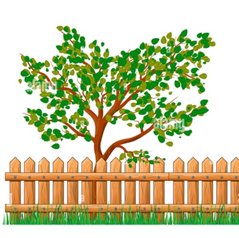

ಪತ್ರಿಗಿಡಗಳ ಅಂಕಿಅಂಶಗಳು

ಶ್ರೀ ಪತ್ರೇಶ್ವರ ದೇವಸ್ತಾನ ಮತ್ತುಬಿಲ್ವಪತ್ರಿವನ, ಯರೇಹಂಚಿನಾಳ
ಗ್ರಾಮ: ಯರೇಹಂಚಿನಾಳ
ತಾಲೂಕು: ಕುಕನೂರು
ಜಿಲ್ಲೆ: ಕೊಪ್ಪಳ
ಯರೇಹಂಚಿನಾಳ
ಒಟ್ಟು ವಿಸ್ತೀರ್ಣ: ಅಂದಾಜು 3 ಎಕರೆ
ಇಮೇಲ್: LOG2PPSS@GMAIL.COM
ಸಂಪರ್ಕಿಸಿ: +91-9741892360/19686911947
ಈ ಬಿಲ್ವ ಪತ್ರಿಯು ಧಾರ್ಮಿಕವಾಗಿ ಅತ್ಯಂತ ಮಹತ್ವ ಪಡಿದಿರುವದಲ್ಲದೆ ಇದರಲ್ಲಿ ಔಷದಿಯ. ಆಯುರ್ವೆದಿಕ ಗುಣಗಳಿದ್ದು ಈ ಗಿಡಗಳು ಪರಿಸರ, ಕೃಷಿ ಇತ್ಯಾದಿಗಳ ಮೇಲೆ ಸಕಾರಾತ್ಮಕ ಪರಿಣಾಮವನ್ನು ಬೀರುತ್ತವೆ ಎಂಬುದು ತಿಳಿದಿರುವ ವಿಷಯ.
ಆದರೆ ಇತ್ತೀಚ್ಚಿಗೆ ವಿವಿಧ ಕಾರಣಗಳಿಂದ ನಮ್ಮ ವನದಲ್ಲಿರುವ ಈ ಮರಗಳ ಸಂಖ್ಯೆ ಕಡಿಮೆಯಾಗುತ್ತಿವೆ. ಆದ್ದರಿಂದ ಈಗ ನಾವು ಈ ಮರಗಳನ್ನು ರಕ್ಷಿಸಿಸುವ ಮತ್ತು ಹೊಸ ಗಿಡಗಳನ್ನು ಬೆಳೆಯುವ ಅವಶ್ಯಕತೆ ಇದೆ. ಇಲ್ಲಿ ನಾವು ಈ ಮರಗಳ ಬಗ್ಗೆ ಸಂಕ್ಷಿಪ್ತ ವಿವರಗಳನ್ನು ನೀಡಲು ಪ್ರಯತ್ನಿಸುತ್ತಿದ್ದೇವೆ, ಹೆಚ್ಚಿನ ವಿವರಗಳಿಗಾಗಿ ನೇರವಾಗಿ ಸಂಪರ್ಕಿಸಿ. ನಿಮ್ಮ ಸಹಾಯವನ್ನು ನಾವು ಪ್ರಶಂಸಿಸುತ್ತೇವೆ.
ಈ ಪವಿತ್ರ ಸ್ಥಳದ ಕುರಿತು ಇನ್ನಷ್ಟು ತಿಳಿದುಕೊಳ್ಳಲು ನಮ್ಮನ್ನು ಸಂಪರ್ಕಿಸಿ

ಸುಮಾರು 10 ವರ್ಷಗಳ ಹಿಂದೆ ಪತ್ರಿವನದ ತುಂಬೆಲ್ಲ ಅತ್ಯಂತ ಸಾಂದ್ರತೆಯಿಂದ ಪತ್ರಿ ಗಿಡಗಳು ಬೆಳೆದಿದ್ದವು. ಸಾವಿರಾರು ಸಂಖ್ಯೆಯಲ್ಲಿದ್ದ ಪತ್ರಿ ಗಿಡಗಳು ಈಗ ಕೆಲವು ನೂರರ ಸಂಖ್ಯೆಯಲ್ಲಿ ಮಾತ್ರ ಉಳಿದಿವೆ.ಪತ್ರಿಗಿಡಗಳ ಸಂಖ್ಯೆ ಕಡಿಮೆಯಾಗಲು ನಮಗೆ ತಿಳಿದಿರುವ ಕೆಲವು ಕಾರಣಗಳು:
-

Purchasing Inputs
ಪತ್ರಿ ವನದ ಸುತ್ತ ಸುರಕ್ಷಿತ ಗೋಡೆ ಅಥವಾ ತಂತಿ ಬೇಲಿ ಇಲ್ಲದಿರುವುದರಿಂದ ಧನಕರುಗಳ ತುಳಿದಾಟ ಜಾಸ್ತಿ ಇರುವದು. -
ಪತ್ರಿ ವನದ ಸುತ್ತ ಸುರಕ್ಷಿತ ಗೋಡೆ ಅಥವಾ ತಂತಿ ಬೇಲಿ ಇಲ್ಲದಿರುವುದರಿಂದ ಧನಕರುಗಳ ತುಳಿದಾಟ ಜಾಸ್ತಿ ಇರುವದು.
-
Hiring Labor
Access labor hiring services to meet farm labor needs. -
Access to Information
Stay updated with weather reports, market prices, and advertisements related to agricultural tools and technological innovations.
Key Features and Benefits
-
Buying and Selling
A platform to purchase inputs and sell produce seamlessly. -
Hiring Labor
Streamline the process of hiring labor for various agricultural tasks. -
Advertisements
Browse ads related to agricultural tools and technological advancements. -
Product Listings
Access a comprehensive listing of products from merchants, companies, dealers, and vendors. -
Information Access
Get up-to-date weather reports, market prices, and product listings to make informed decisions.
Reasons for the Decline in Bel Patra Trees
1. Trampling by Cattles
As there is no secure wall or wire fence around the bel patra forest, there is a lot of trampling by the cattles.
2. Plant Diseases
Plants may die due to various diseases.
3. Lack of Conservation Measures
Not taking proper conservation measures.
4. Lack of Nourishment
Not nourishing the plants.

5. Incorrect Growth Methods
Not knowing the right way to grow new plants.
6. Lack of Knowledge
People do not know the importance and use of plants properly.
ಪತ್ರಿಗಿಡಗಳ ಅಂಕಿಅಂಶಗಳು
ಸುಮಾರು 10 ವರ್ಷಗಳ ಹಿಂದೆ ಪತ್ರಿವನದ ತುಂಬೆಲ್ಲ ಅತ್ಯಂತ ಸಾಂದ್ರತೆಯಿಂದ ಪತ್ರಿ ಗಿಡಗಳು ಬೆಳೆದಿದ್ದವು. ಸಾವಿರಾರು ಸಂಖ್ಯೆಯಲ್ಲಿದ್ದ ಪತ್ರಿ ಗಿಡಗಳು ಈಗ ಕೆಲವು ನೂರರ ಸಂಖ್ಯೆಯಲ್ಲಿ ಮಾತ್ರ ಉಳಿದಿವೆ.
ಪತ್ರಿಗಿಡಗಳ ಸಂಖ್ಯೆ ಕಡಿಮೆಯಾಗಲು ನಮಗೆ ತಿಳಿದಿರುವ ಕೆಲವು ಕಾರಣಗಳು:
ಪತ್ರಿ ವನದ ಸುತ್ತ ಸುರಕ್ಷಿತ ಗೋಡೆ ಅಥವಾ ತಂತಿ ಬೇಲಿ ಇಲ್ಲದಿರುವುದರಿಂದ ಧನಕರುಗಳ ತುಳಿದಾಟ ಜಾಸ್ತಿ ಇರುವದು.
ಬೇರೆ ಬೇರೆ ರೋಗಗಳಿಗೆ ಬಲಿಯಾಗಿ ಗಿಡಗಳು ನಶಿಸಿರಬಹುದು.
ಸರಿಯಾದ ಸಂರಕ್ಷಣಾ ಕ್ರಮ ತೆಗೆದುಕೊಳ್ಳದೆ ಇರುವದು, ಸಸ್ಯಗಳನ್ನು ಪೋಷಣೆ ಮಾಡದಿರುವದು.
ಹೊಸ ಪತ್ರಿ ಗಿಡಗಳನ್ನು ಬೆಳೆಸುವ ಸರಿಯಾದ ವಿಧಾನ ತಿಳಿಯದಿರುವದು.
ಗಿಡಗಳ ಮಹತ್ವ ಮತ್ತು ಉಪಯೋಗ ಜನರಿಗೆ ಸರಿಯಾಗಿ ತಿಳಿಯದಿರುವದು.
ಬಿಲ್ವಪತ್ರಿ, ಕಾಯಿ ಮತ್ತು ಹಣ್ಣಿನ ವಿಶೇಷತೆಗಳು
ಈ ಗಿಡದ ಎಲೆಗಳು, ಕಾಯಿ ಮತ್ತು ಹಣ್ಣುಗಳು ಸಾಮಾನ್ಯ ಬಿಲ್ವಪತ್ರಿಗಿಂತ ವಿಭಿನ್ನವಾಗಿ ಕಾಣಿಸುತ್ತವೆ.
ಈ ಗಿಡದ ಎಲೆಗಳು ತುಂಬಾ ಮೃದುವಾಗಿವೆ, ಮಡಿಚಿದರೆ ಬೇರೆ ಪತ್ನಿ ಎಲೆಗಳಂತೆ ಈ ಪತ್ರಿ ಎಲೆಗಳು ಮುರಿಯುವದಿಲ್ಲ.
ಬೇರೆ ಪತ್ರಿ ಎಲೆಗಳಿಗಿಂತ ಈ ಎಲೆಗಳು ಹೆಚ್ಚು ಸುಗಂಧಿತವಾಗಿವೆ. ಈ ಬಿಲ್ವಪತ್ರಿಯ ಎಲೆಗಳು ತಿನ್ನುವುದಕ್ಕೆ ತುಂಬಾ ರುಚಿಕರ ಮತ್ತು ಅಹ್ಲಾಧಕರವಾಗಿವೆ.
ಹಣ್ಣಿನ ತಿರುಳು ತುಂಬಾ ಮೃದುವಾಗಿ ಮತ್ತು ರುಚಿಕರವಾಗಿರವಾಗಿದೆ.
ದೊಡ್ಡಪತ್ರಿ ಮರದ ಬೇರುಗಳಿಂದ ಕೆಲವೊಂದು ಸಾರಿ ನೈಸರ್ಗಿಕವಾಗಿ ಚಿಕ್ಕ ಚಿಕ್ಕ ಸಸಿಗಳು ತಮ್ಮಿಂದ ತಾವೆ ಬೆಳೆಯುತ್ತವೆ.
ನಾವು ಇಲ್ಲಿಯವರೆಗೆ ನೆಗಡಿ, ಕೆಮ್ಮು, ಅತಿಸಾರ ಭೇದಿ, ಮಧುಮೇಹ ಮತ್ತು ಅನೇಕ ಕಾಯಿಲೆಗಳಿಗೆ ಮಾತ್ರ ಬಿಲ್ವಪತ್ರಿ ಮತ್ತು ಹಣ್ಣುಗಳನ್ನು ಉಪಯೋಗಿಸಿದ್ದೆವೆ. ಆದರೆ ಈ ಪತ್ರಿ ಇನ್ನೂ ಅನೇಕ ಮಹತ್ತರವಾದ ಔಷಧೀಯ ಗುಣಗಳನ್ನು ಹೊಂದಿರಬಹುದೆಂಬ ನಂಬಿಕೆ ನಮ್ಮದು.
What Our Beta Users Say
Farmer A
"Krooshi's platform is set to change the way we sell our produce. The features are impressive!"
Merchant B
"As a merchant, I am excited about the direct access to high-quality products from farmers."

Be a Part of Our Journey
"Cultivate Success with Krooshi: Your Agricultural Marketplace,Are you a farmer ready to showcase your harvest? A merchant in search of premium agricultural goods? Or a supplier eager to offer top-notch farming inputs? Look no further. Krooshi is your all-in-one digital ecosystem, designed to revolutionize agricultural commerce. Join our growing community today. By signing up, you'll be at the forefront of agricultural innovation, receiving exclusive updates on our upcoming launch and the latest industry insights. Don't miss this opportunity to be part of the future of farming. Sign up now and sow the seeds of your success with Krooshi."